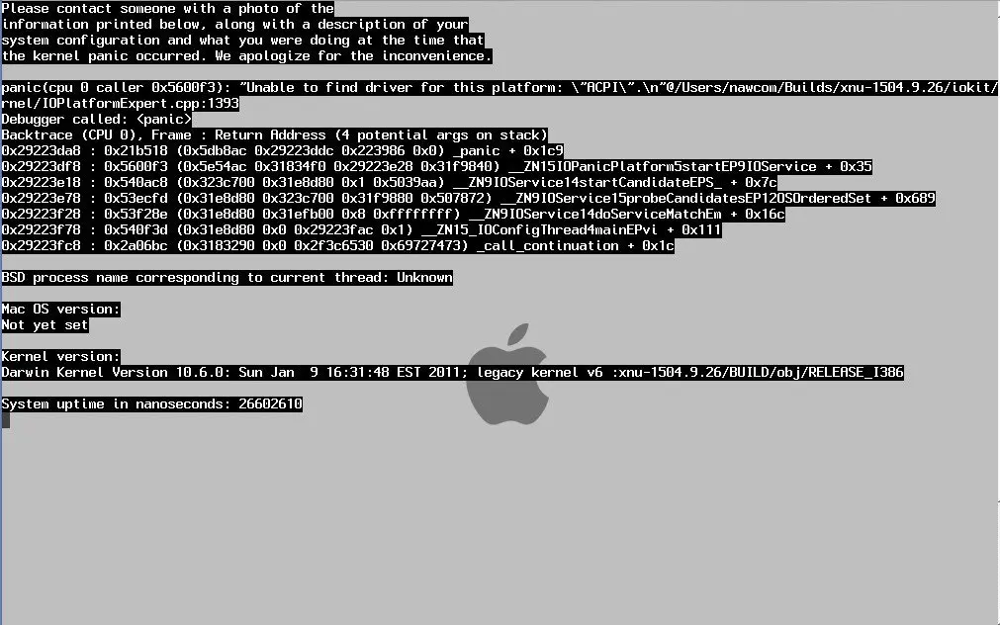
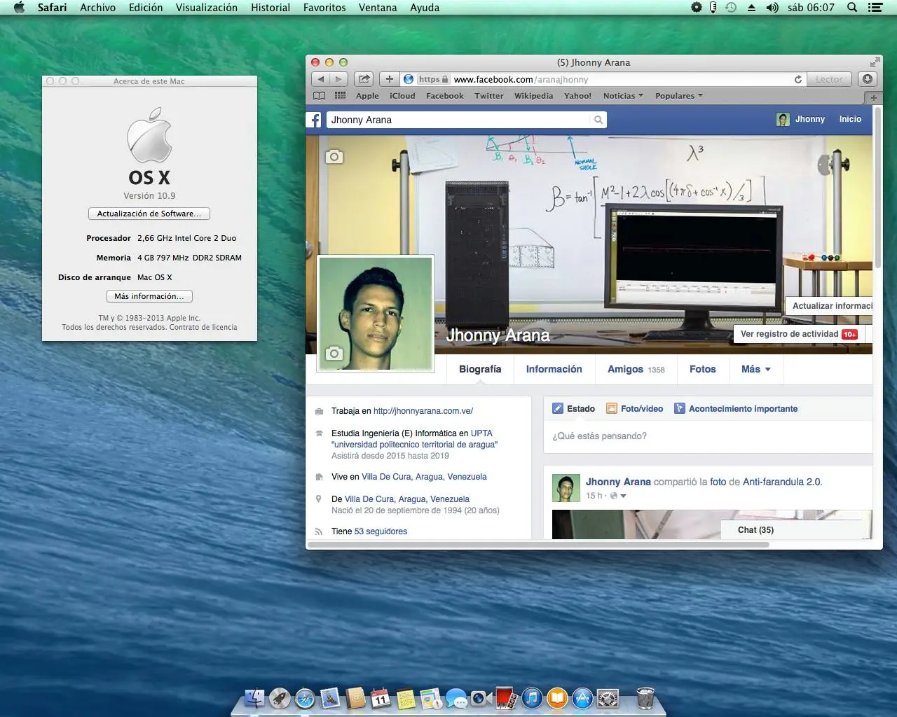
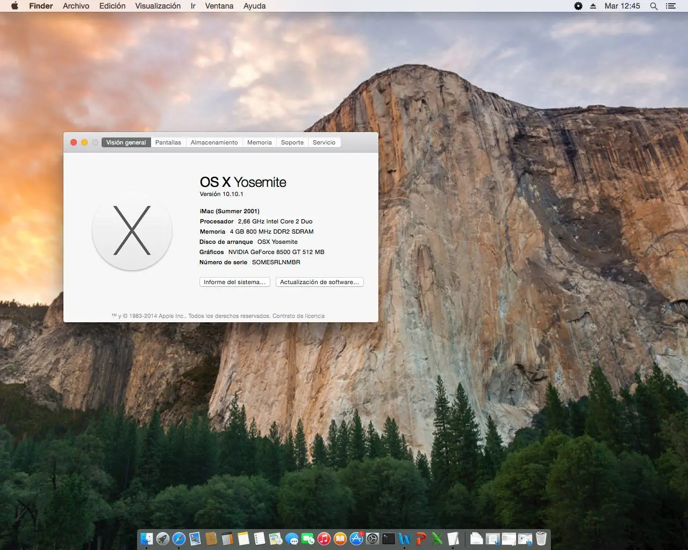
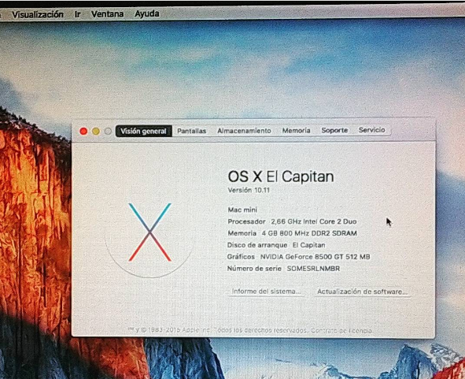
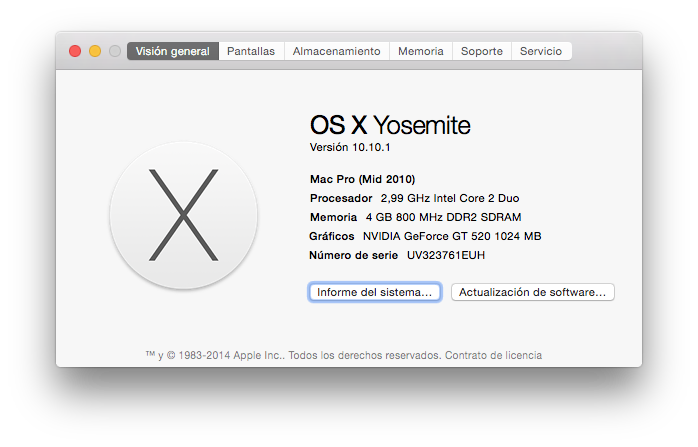

Almost 3 years ago I installed Mac OS X mavericks for the first time on my personal computer, before this I used a lot of distributions of gnu linux. but sometimes I had heard about Mac OS X and hackintosh, in that moment it seemed something Impossible to do.
After spending hours reading guides in forums, reddit, tonymac86. I decided to try installing mavericks. The first thing I did was to download a torrent of niresh. For that moment there was no support for Yosemite.
In which I finished downloading follow the installation guide of hackintosh.zone the first thing I found when trying to start the usb was a black screen that showed a warning of kernel panic. This happened because I was doing the installation with the video card placed in the computer and it did not have support.

After reading and trying several times, it worked!, At that moment the emotion I felt was incredible to be able to use the Mac OS X system in a computer with so few resources.

Later on I got to read a lot about the Kexts that basically are the equivalent of the drivers in microsoft windows and look for the ones that would serve me for my video card, Everything worked fine.
A few months passed until Yosemite came out, with a renewed interface a lot of improvements, and even included support for my set up. Then I decided to do the same, and try to install it, the installation process was quite similar, although the performance was not the same, it cost me to configure the video card since I did not save a copy of the kexts files, but in the end it worked fine But consumed half of my memory.

That version 10.10.1 used for a long time almost 1 year, then the time came to install El Capitan, which to my surprise never leave a distro niresh. I had to do the vanilla installation process, which was very complicated, but not impossible.

After using this version for a long time, my video card stopped working, and it took almost a year to buy another, the reason is that I live in Venezuela and here to buy hardware is very expensive.
But I did the same again when buying my new GT520 card. And to this day everything has worked perfectly, it is noteworthy that I use the computer only to program in php, nodejs, and some python. Also my family usually do things that ordinary people do like watching movies, edit spreadsheets. Although I have installed the nvidia driver I do not usually play here, nor edit 3d files, nor videos. Since that requires a lot of Ram and I only have 4 gb.

Advantages of using Mac OS X during this time:
- Use all programs that are exclusive to Mac OS X
- Have microsoft office and do not need something like wine in linux.
- Everything works at first most of the time.
- To learn how to develop iphone applications with xcode
- Something that I like is that very little fails.
Disadvantages:
- Not being able to access iCloud, App Store or any of that because it is not a real mac.
- The ram memory consumption is very high here, compared to linux or windows.
- The incompatibility with some pci devices.
Thank you for reading. If you have any questions, DM to aranajhonny@outlook.com
Some react components used in this blog were taken from rauchg.com
Sorry for any mistakes, english is not my native language. I like AI and use the google translate.